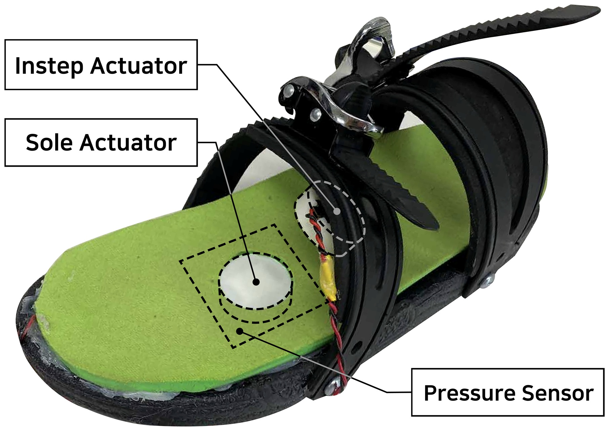
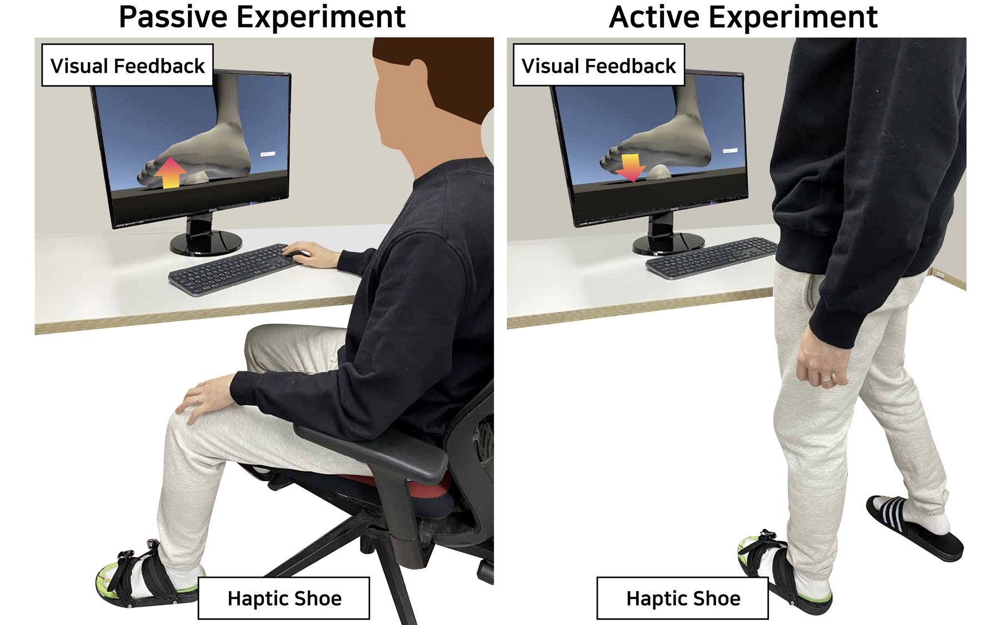

Body-penetrating phantom sensations
Can vibration evoke the experience of stepping on a virtual object?
IEEE WHC · Conference paper

Research question
Coordinated stimulation on the sole and instep can produce a sensation that moves through the foot. This project investigates how that illusion can express contact with a virtual object.
Prototype and study
A foot-worn vibrotactile prototype is evaluated in passive stimulation and active stepping conditions, with and without visual feedback.
Findings
The metaphor was more convincing in passive perception. The benefit was less clear during active stepping, highlighting the importance of the sensations generated by a user's own movement.

Research presentation
Publication
Vibrotactile Metaphor of Physical Interaction Using Body-Penetrating Phantom Sensations: Stepping on a Virtual Object
IEEE WHC, 2021.